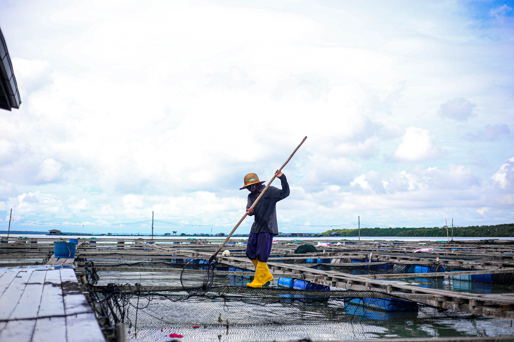
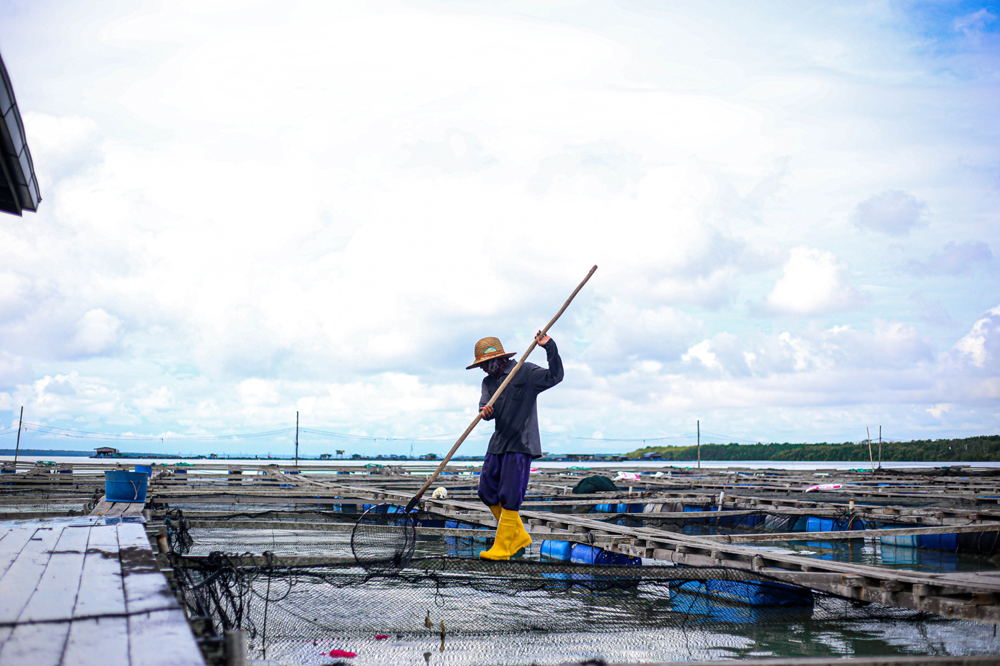

HISTORY
Kuala Selangor is a town in Selangor, Malaysia, and the capital of the district of the same name. The word “Kuala” means river mouth in Malay, and the town is located where the Selangor River (Sungai Selangor) meets the sea. It is a coastal town about 50 km north of Klang, 63 km from Shah Alam, and around 70 km from Kuala Lumpur. Historically, Kuala Selangor was the old royal capital of Selangor before the capital moved to Klang, then Kuala Lumpur, and later to Shah Alam.
According to history, settlements in Kuala Selangor date back to the 16th century, initially under the Malacca Empire. The town became a royal capital of Selangor but was conquered by the Dutch in 1784 during their attempt to control the tin trade in Perak and Selangor. Bukit Melawati, a hill overlooking the town and the Strait of Malacca, had its fortifications destroyed by the Dutch, who built Fort Atlingsburg in European style. By the end of the 17th century, the Bugis took control of the area, and in 1857, the Selangor government was formally established.
 

ECONOMY
Agriculture
Agriculture is a key pillar of Kuala Selangor’s economy due to its rural character and fertile land. The district is known for paddy rice cultivation, especially in areas like Ijok, which contributes to Selangor’s overall rice production. In addition, palm oil plantations are found inland, supporting local employment and food production. While agriculture is important for the community, its contribution to Selangor’s total GDP is smaller compared to urbanized districts.
Fishing and Aquaculture
Kuala Selangor’s coastal location makes fishing an important economic activity for the district. Traditional fishing and prawn aquaculture are practiced around coastal areas such as Tanjung Karang and Sungai Besar. Fishing not only supports local livelihoods but also provides seafood for domestic markets, although some small-scale fisheries face challenges due to environmental pressures and declining catch volumes.
Light Manufacturing and Agro-processing
Small-scale manufacturing and agro-processing industries exist in Kuala Selangor. These include rice milling, food packaging, and seafood processing, which help add value to local agricultural and fishery outputs. Such activities create local employment and encourage small enterprise development, connecting raw production to more marketable goods.